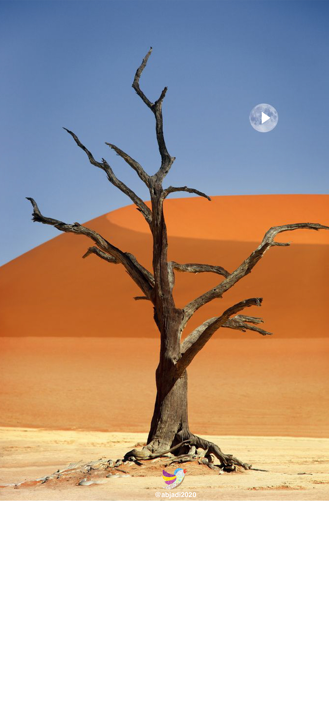

<audio id="treemoon" src="treemoon.mp3" preload="auto"></audio>


<script>

    function treemoon() {
        var audio = document.getElementById("treemoon");

        if (audio.duration > 0 && !audio.paused) {
            audio.pause();
            audio.currentTime = 0;
        } else {
            audio.play();
        }
    }

</script>


<map name="image-map">

    <area target="_blank" alt="" title="" href="" onclick="javascript:treemoon(); return false;"coords="818,328,997,474" shape="rect">
        
  
  </map>
